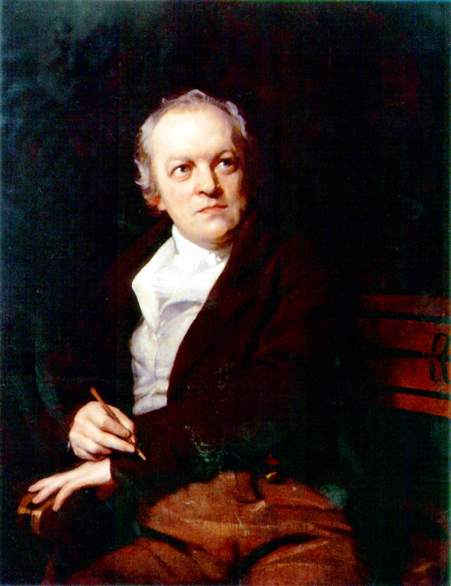

|  Works
Songs of Innocence and Experience(Digital Book and text) More details on following poetries: - London (Blake vs. Wordsworth) - The Tyger - The Lamb - Infant Joy - The Black Boy The Marriage of Heaven and Hell (Digital Book) Illustrations of Dante's Comedy (Image Gallery) by Alberto Canducci
|
Biography William Blake was an English poet, painter and printmaker. Largely unrecognised during his lifetime, but today Blake's work is considered too significant in the history of both poetry and the visual arts. He was born in London on 28 November 1757, from a middle-class family. He never attended school, being educated at home by his mother. The Blake belonged to the Moravian Church (is a mainline Protestant denomination). The Bible was an early and profound influence on Blake, and would remain a source of inspiration throughout his life. Blake is highly regarded today for his expressiveness and creativity, Blake said that: "The imagination is not a State: it is the Human existence itself". His visual art and written poetry are usually considered separately, but he used both for example he was a printmaker of his poems (see Songs of Innocence and Experience and The Marriage of Heaven and Hell) He was a freethinker, for exemple he supported the French Revolution and he remained a radical for all his life. Till Joung William Blake said to have visions. The first time
was when he was 8-10 years old, when he lived in London. He saw that
there was some angles "bespangling every bough like stars" on a tree.
According to a Blake's biographer, he returned home to report that, but
he only escaped to being hit by his father through the intervention of
his mother. Something on his Death On the day of his death, Blake worked hardly on his watercolors. It's reported that he stopped working and turned to his wife, who was crying by his bedside. Beholding her, Blake said: "Stay Kate! Keep just as you are - I will draw your portrait - for you have ever been an angel to me." He was buried five days after his death, on the eve of his forty-fifth wedding anniversary. Present at the ceremonies were Catherine, Edward Calvert, George Richmond, Frederick Tatham and John Linnell. Catherine moved into Tatham's house as a housekeeper. She continued selling his illuminated works and paintings. On her death, Blake's manuscripts were taken by Tatham (a follower Blake's artist), who burned several of those which he considered heretical. Blake and religion His view of religion is evident in The Marriage of Heaven and Hell, a series of texts written in imitation of biblical prophecy. Some Blake's Quotations: « The imagination is not a State: it is the Human existence itself. » « Men are admitted into Heaven not
because they have curbed & govern'd their Passions or have No
Passions, but because they have Cultivated their Understandings. The
Treasures of Heaven are not Negations of Passion, but Realities of
Intellect, from which all the Passions Emanate Uncurbed in their
Eternal Glory. »
|